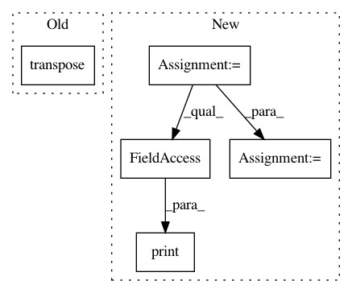

506b234094009d55d326f1ce957f53f15d4b65ee,geomstats/spd_matrices_space.py,,group_log,#Any#,52
Before Change
assert np.all(eigenvalues > 0)
diag_log = np.diag(np.log(eigenvalues))
log = np.dot(np.dot(vectors, diag_log), vectors.transpose())
return log
After Change
print(vectors.shape)
assert np.all(eigenvalues > 0)
diag_log = np.zeros((n_sym_mats, mat_dim, mat_dim))
for i in range(n_sym_mats):
diag_log[i] = np.diag(np.log(eigenvalues[i]))
log = np.matmul(diag_log, np.transpose(vectors, axes=(0, 2, 1)))
log = np.matmul(vectors, log)
print("log")
print(log.shape)
return log
class SPDMatricesSpace(Manifold):
In pattern: SUPERPATTERN
Frequency: 3
Non-data size: 5
Instances
Project Name: geomstats/geomstats
Commit Name: 506b234094009d55d326f1ce957f53f15d4b65ee
Time: 2018-02-26
Author: ninamio78@gmail.com
File Name: geomstats/spd_matrices_space.py
Class Name:
Method Name: group_log
Project Name: analysiscenter/batchflow
Commit Name: c5171109a44b9383f655676a90903e4c4d001014
Time: 2017-12-05
Author: a.kozhevin@analysiscenter.ru
File Name: dataset/models/tf/faster_rcnn.py
Class Name: FasterRCNN
Method Name: create_anchors
Project Name: geomstats/geomstats
Commit Name: 506b234094009d55d326f1ce957f53f15d4b65ee
Time: 2018-02-26
Author: ninamio78@gmail.com
File Name: geomstats/spd_matrices_space.py
Class Name:
Method Name: group_exp